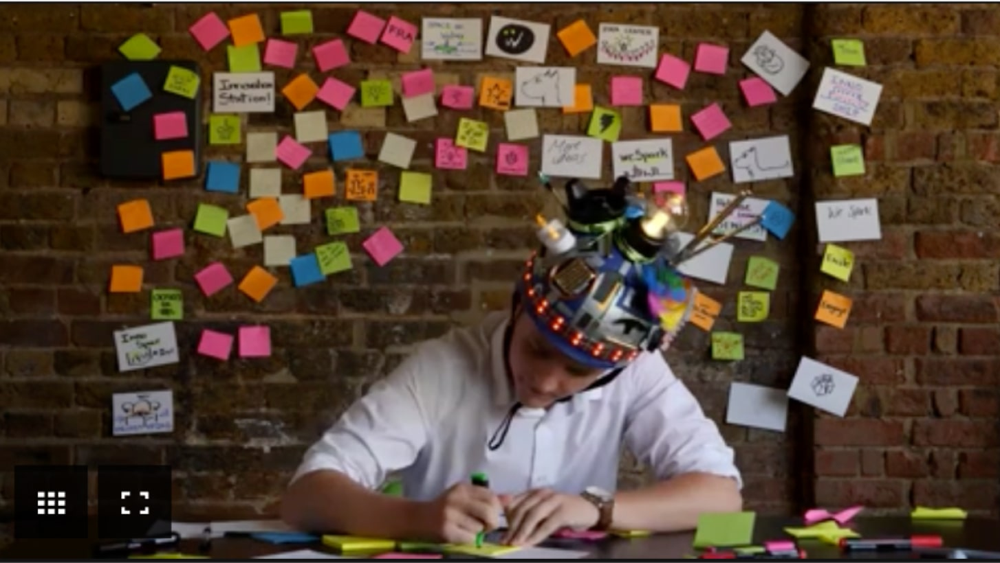

כוחו של עיצוב בתוך מגבלות
לעבוד תחת אילוצים זה לא פשרה אלא אסטרטגיה לפיתוח יצירתיות. על ידי תפיסה מחדש של מגבלות כעוגנים והבנת האתגרים הייחודיים שלהם, מעצבים יכולים לנווט במורכבות הפרויקטים שלהם עם מיקוד, חדשנות ויצירתיות גדולים.
מאת: קרן שגב | 5 דקות קריאה | 22.02.2024
בתחום הדינמי של עיצוב, הרעיון של חופש יצירתי בלתי מוגבל נתפס לעתים קרובות כזרז אולטימטיבי לחדשנות. עם זאת, הפרדוקס טמון בעובדה שהאילוצים לא מעכבים את היצירתיות, אלא יכולים לשמש עוגנים עוצמתיים שמגבירים את תהליך העיצוב והתהליך הקריאטיבי.
פרדוקס החירות
איך הייתם מגיבים אם הייתי באה עם דרישה כזו: ״תעצבו לי משהו! אתם מעצבים לא?! אז תעצבו לי משהו!״למרות שדרישה כזו לכאורה משחררת, החופש הבלתי מוגבל הזה יכול להוביל לחוסר מיקוד, ולהשאיר מעצבים מרחפים בחלל יצירתי. האשליה של יצירתיות חסרת גבולות יכולה להיות מגבילה ואפילו משתקת יותר מהאילוצים עצמם.
עוגנים, לא הגבלות
אילוצים מגיעים בצורות שונות, החל מזמן ותקציב ועד ברנד-בוק ומגבלות טכניות. במקום לראות את האילוצים האלה כמחסומים מגבילים, הם יכולים להיתפס כעוגנים - אלמנטים שמבססים ותומכים בתהליך העיצוב. על ידי מסגור העבודה בתוך עוגנים אלה, מעצבים יכולים לתעל את היצירתיות שלהם. לפני שנים רבות בלימודי עיצוב, קיבלנו משימה ל״עטוף אות״ - משימה שכל אחד יכול לפרש כרצונו. ראיתי שהסטודנטים האחרים נוסעים עד תל אביב וקונים כמויות של קרטוני ביצוע וניירות עטיפה, ועוד… והבנתי שאין סיכוי שאני נכנסת לפרויקט כזה היות ועבדתי המון כדי לממן את הלימודים, אז למעשה הבנתי שהמגבלה העיקרית שלי היא - זמן. הקצבתי לעצמי בין שעה לשעתיים לביצוע המשימה. מה שהוביל אותי להרבה רעיונות אבל המשכתי רק עם שניים מהם:
- להדפיס את האות ח׳ בגופן ״חיים״ וכתבתי שהאות ח׳ אורזת האות י׳.
- ארזתי את כל האותיות בכל השפות ביקום כולו - הבאתי צנצנת דיו :)
לא התעסקתי ב״איך״ התעסקתי ב״מה״. מגבלת הזמן בעצם צמצמה לי את האפשרויות באופן כזה שרק משהו שיכול להתבצע יחסית מהר - יבוצע.

אנחנו חוקרים, אנחנו מחליטים, אנחנו מעצבים ומתקדמים, אבל תוך כדי חייבים תמיד להיות במודעות למה
אנחנו עושים, באיזה סיטואציה הפיתוח. זה לא רק מבאס שמבינים שעשינו מלא דברים שהיו אמורים להיות
מערכתיים ובסוף לא משתמשים בהם בכלל
זה גם פשוט לא יעיל וגוזל זמן.
כשאנחנו התקדמנו עם התשתיות, עם הגדרות הטוקנים, הגרידים, האלביישן, הטיפוגרפיה, כשבנינו את הכל
בקומפוננטות כדי שבאמת סוף סוף תהיה לנו סיסטמה, שנוכל לעשות שינוי במקום אחד וזה יחלחל לכל
המקומות. שנוכל לחסוך זמן.אז אחרי שבנינו יחד את כל התשתיות, לקבל תשובה כמו:
״אה זה יקח מלא זמן לעדכן בכל המקומות, פשוט יקח לי שבועיים רק למצוא את כל המקומות שהצבע הזה
מופיע״ בהילת ״פשוט אצלנו זה עובד אחרת״ זה מאוד מאוד קשה לשמוע. כי אם היינו הרי נחשפים ומבינים את
ה״אחרת״ הזה היינו יכולים לתת את הדעת עליו ולראות איך אנחנו מתייחסים לכל דבר, וכל נושא ממש
כשאנחנו בונים.
אחרי כל העבודה שעשינו, שינוי שלנו לוקח ממש כמה דקות וחשבנו שיקח גם לפיתוח כמה דקות ואולי עוד קצת
יותר, בסוף אומרים לנו שיקח שבועיים - זה מתסכל.
צריך הגדרת תהליכים בחיים
אז מה עושים? צועדים יחד, בתקשורת ובהבנה. וגם אם זה לא ממש יד ביד. זה בסדר. כל עוד זה מוגדר. אתה תתפוס בצד אחד ואני בצד השני, אתה לא תופס? אין בעיה, אני אקח על הגב. חייבים לתקשר עם הפיתוח כבר בשלב שאנחנו בונים את התשתיות, הצבעים, הטיפוגרפיה... ולאחר מכן עוברים יחד קומפוננטה קומפוננטה, בלי למצמץ. גם אם יש מפתח או מפתחת שהוגדרו על הסיסטם וזה נראה שהפריוריטי של החברה בעדנו, אנחנו עדיין חייבים להיות עם העכבר על הדופק כל הזמן, בכל שלב. לוודא שאנחנו aligned לאורך כל הדרך. ואם לא, למה? מה אנחנו יכולים לעשות? איך אנחנו יכולים להטמיע את הצורה שהפיתוח חושב אצלנו בפיגמה. ככל שנחשף יותר לסביבת הפיתוח, נבין יותר ונדע איך להתאים או לא להתאים את המערכת שלנו.
צריך תקשורת בחיים
ראינו, חקרנו והסכמנו על סכמה מסוימת לכתיבת הטוקנים שלנו. קיבלנו עליה אישור. יצרנו קומפוננטה ובמשך חצי יום יצרנו גם את הטוקנים שלה. וכך לעוד עשר קומפוננטות בסיס. לאחר חצי שנה של ״כן עם הראש״, התברר שהפיתוח יישמו אחרת את הטוקנים או בעצם לא יישמו בכלל. החמישה ימים האלה שבילינו בלעשות טוקנים לאותן קומפוננטות היו יכולים להיות מנוצלים למשהו אחר. זה בסדר גמור שהפיתוח לא עובד תמיד בדיוק כמונו, זה רק צריך להיות ברור ומוגדר, מה ההשלכות? מה הפעולות שאנחנו כן עושים מצד העיצוב ששווה לעשות אפילו שהן עוזרות רק לעיצוב? ואולי פעולות שעכשיו לא, אבל בעתיד כן יכולות לעזור לפיתוח. שווה להגדיר מה ה definition of done של קומפוננטה לא? איזה תענוג זה יהיה כשתרד הדרישה בחברה לעשות גם dark theme פתאום וזה יקח לנו רק כמה ימים (ולא שנה כמו שחשבו). ואחר כך בבניית הפלואים כל מסך ומסך פשוט יהיה לחיצת כפתור למעבר בין ה themes. כמה זמן זה לחיצת כפתור? בין שניה לשניה וחצי - ללקק את האצבעות.לכן, אם מתקשרים, מודעים למגבלות ומשקיעים בהגדרות - באמת שאפשר לייצר משהו נפלא. וגם אם הוא כמעט נפלא, זה במודע. אנחנו יודעים איפה בדיוק המקומות הנכונים להשקיע כדי שזה יהיה נפלא בדיוק עבורנו.

תהיו מוכנים
אנחנו נשמע הרבה: ״אה לא חשבתי שזה יעניין אתכם, אבל מה זה משנה לכם? אבל זה ענייני פיתוח, לא רציתי
לשעמם אתכם״ וכו׳.
ואנחנו נענה: ״אז איך אתם כן עושים את זה אצלכם? אפשר לראות? לא זה לא ישעמם אותי, להיפך!״ (חיוך)
״אז רגע התשתית היא במטיראל ועל זה פלטר, תוכל ממש בכמה דקות להראות לי מה זה אומר?״
כשאנחנו נצעד יחד אל השקיעה, היא תהיה מוגדרת היטב, אחוז אופסיטי וטוקן לצבע (bg.sunset-primary).
והשקיעה של היום אחרי תהיה פשוט בלחיצת כפתור. כדי שישאר לנו מספיק זמן לוויקלי, לדיילי ולהאוורלי.
צ׳ירז!

אתי לייפר שרביט
Senior Design System Designer ב- kido

מאמרים מומלצים:
מה זה חוב עיצובי, ומה הקשר שלו ל- DesignOps
מאת: דינה ניימן
עקביות בעיצוב בסקייל: ניתוח variables בפיגמה
מאת: יוליה סקיגר